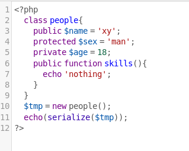
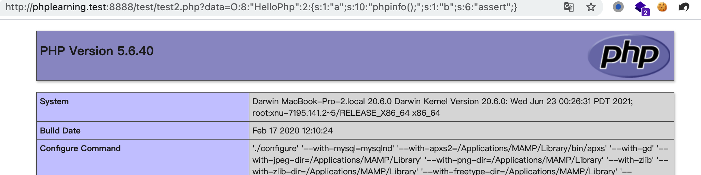
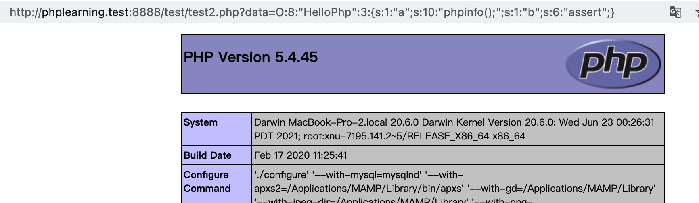

php 反序列化漏洞
本文最后更新于：1 天前
PHP序列化与反序列化
序列化的应用
看完这篇应该有一个更深刻的理解：https://zhuanlan.zhihu.com/p/33426188
在传递变量的过程中，有可能遇到变量值要跨脚本文件传递的过程。试想，如果为一个脚本中想要调用之前一个脚本的变量，但是前一个脚本已经执行完毕，所有的变量和内容释放掉了，我们要如何操作呢？难道要前一个脚本不断的循环，等待后面脚本调用？这肯定是不现实的
php 程序为了更方便的保存和传输对象，提供了序列化和反序列化的方法。有一种更直观的理解，两个人互相传文件时，通常会做压缩解压操作，也可以这么理解序列化与反序列化
serialize()
PHP 使用 serialize() 将对象序列化为字符串保存下来
1 | |
serialize() 将返回字符串，此字符串包含了表示 $value 的字节流，可以存储于任何地方
当序列化对象时，PHP 将试图在序列动作之前调用该对象的成员函数 __sleep()
序列化一个对象将会保存对象的所有变量，但是不会保存对象的方法，只会保存类的名字
【序列化字符串格式】
所有php里面的值都可以使用函数 serialize() 序列化为包含字节流的字符串，PHP 序列化字符串格式如下
1 | |
【类型字母详解】
1 | |
【实例】数据类型为对象
1 | |
输出结果
1 | |
如果变量类型不为public，如下

php为了区别这些属性所以进行了一些修饰。这个乱码查了下资料，其实是 %00（url编码，hex也就是0x00）。表示的是NULL。所以protected属性的表示方式是在变量名前加个 %00*%00， private表示方式是在变量名前加上 %00类名%00
或者以下形式
1 | |
【示例】数据类型为数组
1 | |
输出结果
1 | |
unserialize()
php使用 unserialize() 恢复原先被序列化的变量
1 | |
若被反序列化的变量是一个对象，在成功地重新构造对象之后，==PHP 会自动地试图去调用 __wakeup() 成员函数==
php的魔术方法
PHP类中有一种特殊函数体的存在叫魔术方法，这些方法在某些情况下会自动调用
1 | |
PHP反序列化漏洞
通过序列化与反序列化我们可以很方便的在PHP中进行对象的传递。本质上反序列化是没有危害的。反序列化漏洞的成因在于代码中的 unserialize() 接收的参数可控，通过控制反序列化数据从而篡改对象的属性，最终造成有效攻击
漏洞利用的前提：
1）可控的反序列化入口
* unserialize() 参数可控，这是最常见的反序列化入口
* session数据可控反序列化，目标系统混用serialize处理器，情况较少
* phar反序列化，能上传具有phar格式的文件（后缀不影响）+文件函数参数可控。文件函数参数可控主要是为了使用phar://协议读取上传的phar文件
2）在反序列化入口文件作用域内存在可利用的类，魔术方法。因为序列化对象只能保存对象的属性值，不能保存方法。所以通过反序列化恢复对象时，只能通过魔术方法触发执行敏感代码。所以前提是程序中有这样的跳板。
php反序列化基础示例
[NPUCTF2020] ReadlezPHP
源码审计，利用反序列化漏洞很多时候都是注入对当前作用域有效的php对象，我们需要对程序本身的代码十分熟悉，所以很多反序列化漏洞基本都是通过代码审计才能挖出：
可以看到HelloPhp类通过魔术方法，默认是执行一个date函数。如果我们能控制HelloPhp类的属性，就能传递任意参数执行任意函数。
而程序也提供了一个 unserialize() 变量可控的入口参数，我们通过该参数便可以注入 HelloPhp 类对象的反序列化字符串，通过unserialize() 便可以构造一个HelloPhp类对象，通过控制其属性，执行任意命令。所以很多时候反序列化漏洞有被称作php对象注入漏洞
1 | |
利用poc如下，构造一个HelloPhp类对象，序列化输出该对象，然后注入上诉程序中
1 | |
遇到问题：我使 $b=’eval’，却没有效果
知识点：eval 是一个语言构造器而不是一个函数，不能被可变函数调用（来自官方文档）;
在php7.1后，assert也被认为是一个语言结构，故也不能被可变函数调用了
poc执行效果如下：
最后分析一下poc是怎么被执行的：
1）程序会先对输入做反序列化处理，便会获得一个HelloPhp类对象，在反序列化时会触发 __wakeup() 魔术方法，这里没有不考虑
2）因为该对象已经创建过了，反序列化也只是恢复该对象，便不会触发 __constuct() 方法
3）不过在程序结果时，内存中的 HelloPhp 类对象都会被释放，从而触发 __destruct() 函数，因为我们修改了HelloPhp中的属性，程序便按照我们修改的值去执行，从而实现了php对象注入攻击
__wakeup()函数绕过漏洞
很多php程序会使用 __wakeup() 来阻止php对象注入攻击，但 __wakeup() 是被爆出过一个 CVE-2016-7124 漏洞，可以绕过 __wakeup()。不过现在主流的 php 版本已经修复这个漏洞了，利用这个漏洞前请先看好目标的 php 版本
漏洞编号：CVE-2016-712
影响版本：PHP5 < 5.6.25；PHP7 < 7.0.10
漏洞描述：当序列化字符串对象属性数量大于实际的属性数量时，将不会调用 __wakeup 函数
使用上面的示例，系统使用 __wakeup() 做了如下修复，如果还想实现php对象注入攻击，我们需要绕过 __wakeup() 的执行
1 | |
如果目标的 php 版本为漏洞版本，便可以修改一下poc实现攻击
1 | |
实测有效，只是这种低版本php不知道能不能遇到：
Session反序列化漏洞
php程序在处理session会话时，默认会把session数据通过session.serialize处理器转换为序列化数据保存在一个临时文件中，如果要读取这些数据，则需要session.serialize处理器做一次反序列化处理，不同的session.serialize处理器处理数据的方式不同，但在反序列化操作时和unserialize()函数相同
所以一旦session数据可控，就和unserialize()参数可控一样，有存在php对象注入的风险。注意这里其实有另外一个攻击点：文件包含，利用文件包含可控的session文件也是一种常见利用方式
利用Session 反序列化漏洞产生原因在于 session.serialize处理器 在混用时的一个bug，下面详细分析一下。
session.serialize处理器
理解session反序列化漏洞，需要对session的原理和工作流程十分熟悉，但这里就不多介绍session了，具体参考笔记【编程-php-常见web编程：会话处理，session】
这里只关注php中处理 session 序列化的处理器，由 session.serialize_handler 定义，session.serialize_handler定义的引擎有三种，如下表所示：
| 处理器名称 | 存储格式 |
|---|---|
| php | 键名 + 竖线 + 经过 serialize() 函数序列化处理的值 |
| php_binary | 键名的长度对应的 ASCII 字符 + 键名 + 经过 serialize() 函数序列化处理的值 |
| php_serialize | 经过serialize()函数序列化处理的数组 |
示例代码：
1 | |
最终的session数据格式如下：
1 | |
如果在php_binary处理器和php_serialize处理器分别注入 $_SESSION['name'] = '|s:5:"jelly";';，最后的session数据如下：
1 | |
再使用php处理器来读取上面的session文件时仍能反序列化成功，读取到的值如下：
1 | |
到这基本就能理解到session反序列化漏洞产生的原因了，如果程序在存入session时用了php_binary处理器或php_serialize处理器，且写入的session数据可控，便可以注入带有|符号的php处理器格式数据，如果程序恰巧在某处又使用php处理器来读取session，那么注入的数据能被有效的反序列化处理，从而造成危害
其实seesion反序列化本质作用就是多了一个可控的 unserialize() 入口，能否注入可利用的php对象也是另外一回事了
简单的session反序化漏洞示例
session.php
session.php 文件的处理器是 php_serialize
session.php 文件的作用是传入可控的 session 值
1 | |
class.php
class.php文件的处理器是php
class.php 文件的作用是在反序列化开始前输出Who are you?，反序列化结束的时候输出name值
1 | |
利用方式：
1）生成的序列化字符串，利用 payload 如下
1 | |
生成的反序列化字符串为：
1 | |
2）利用 session.php （php_serialize处理器）注入，记得加上 | 符号
1 | |
此时session文件内容如下：
1 | |
3）访问 class.php（php处理器），通过session反序列化便恢复了 XianZhi 类对象，反序列化操作也会触发 __wakeup() 方法，在程序结束后又会触发 __destruct() 方法
上传进度控制session反序列化
参考：https://chenlvtang.top/2021/04/13/PHP%E4%B8%ADsession-upload-progress%E7%9A%84%E5%88%A9%E7%94%A8/
上面说到session反序列化漏洞需要写入的session数据可控，相当于 $_SESSION['xxx']=$_GET['yyy']，但其实 $_SESSION 很少会有外部数据控制的，但就是有大佬发现了一定能写入session的方法，用到了php session上传进度的知识，具体看手册
当php.ini中的session.upload_progress.enabled开启后（默认为开启），在上传文件时，PHP会监测每一个文件的进度，并可以通过一个POST请求来检查这个状态。如果同时POST一个与INI中设置的 session.upload_progress.name 同名变量时，上传进度可以在$_SESSION中获得。当PHP检测到这种POST请求时，它会在$_SESSION中添加一组数据，索引是 session.upload_progress.prefix 与 session.upload_progress.name 连接在一起的值。
下面是官方给出的一个例子：
1 | |
session数据可能如下：
1 | |
可以看到session中的field_name和name都是我们可控的
这里还有一个点要注意，session.upload_progress.cleanup 要设置为off(默认为on)，当文件上传结束后，php将会立即清空对应session文件中的内容，如果为on可以利用条件竞争，用 burp 不断发包，在文件删除之前赶快利用到这个文件。条件竞争这个概念在文件上传也遇到过一次，在这的意思差不多
【实例】Jarvisoj Web：http://web.jarvisoj.com:32784/index.php
简单分析一下源码：
- 当前文件使用的是 php 处理器
- 在 OowoO 类的
__destruct()方法中有一个敏感方法eval($this->mdzz)，如果程序存在反序列化入口基本就能利用这个方法，而这里的入口就是session反序列化
1 | |
程序可以看到 phpinfo 的信息，先查看一些关键参数：
session.serialize_handler Local为php处理器，Master为php_serialize处理器，我的理解是系统在处理上传文件时还是会用主处理器即 php_serialize，在访问 index.php 时再次读取session时使用了php处理器从而触发反序列化。
从这里也能更深刻的理解到在写 session 数据时一定要用 php_serialize 或 php_binary 处理器，在读时使用 php 处理器
session.upload_progress.enabled 开启，可以监控文件上传进度。 session.upload_progress.cleanup 关闭，不用担心写入内容被删除了
还可以看下 disable_functions，该靶机是禁用了很多函数的
通过 phpinfo 可以看到这些基础配置都是满足我们的需求的，下面就直接利用好了
1）生成序列化 exp ，我们主要控制OowoO的属性$mdzz即可
1 | |
2）利用上传进度写入 payload
poc 如下
1 | |
可以在本地搭建 web 服务，然后抓取这个包，在 field_name 中插入上面的 payload，注意要加 | 符号，其中的双引号记得转义
（1）看下当前目录
1 | |
（2）查看当前目录有什么文件，找到flag文件
1 | |

（3）读取flag文件
1 | |
phar反序列化漏洞
参考：https://paper.seebug.org/680/
上面提到session反序列化漏洞其实就是一个提供了一个可控的反序列化入口，phar反序列化漏洞一样
phar反序列化漏洞最早在2017由Orange在hitcon以CTF题目方式提出（i春秋复现地址：http://117.50.3.97:8005/），在2018年又有安全人员在Black Hat分享phar的利用
Phar (“Php ARchive”) 是PHP里类似于JAR的一种打包文件。如果你使用的是 PHP 5.3 或更高版本，那么Phar后缀文件是默认开启支持的，你不需要任何其他的安装就可以使用它。
而Phar文件中也存在反序列化的利用点：phar文件会以序列化的形式存储用户自定义的meta-data，该方法在文件系统函数（file_exists()、is_dir()等）参数可控的情况下，配合phar://伪协议，可以不依赖 unserialize() 直接进行反序列化操作。phar的具体知识参考笔记【编程-php-杂项-php伪协议：phar://】
生成phar文件
利用phar反序列化漏洞首先要学会怎么生成phar文件， setMetadata()则写入将自定义的meta-data序列化后写入phar文件。
在大多文件系统函数通过 phar:// 伪协议解析phar文件的时候，则会将 mate-data 进行反序列化
1 | |
实战利用
源码来自mochazz博客：
- 发现我们控制MyClass对象的$output属性就可以利用
__destruct()执行任意代码了，现在我们就需要找到一个反序列化入口，帮助我们注入这样的php对象 - file_exists() 参数可控，利用该文件函数结合phar://伪协议访问一个phar文件就能触发反序列化，现在我们只需要能上传一个phar文件即可
1 | |
利用过程如下：
1）生成利用phar文件的代码如下，phar文件生成后是可以改文件后缀的
1 | |
注意：要将php.ini中的phar.readonly选项设置为Off，否则无法生成phar文件
2）将phar文件上传到服务器，我这里懒得写上传了，直接放上去就是。而且我把文件后缀该成了jpg，这样基本就能绕过文件上传了
3）利用phar://协议读取文件触发反序列化
1 | |
POP链构造
参考：https://bkfish.gitee.io/2020/01/04/pop%E9%93%BE/
面向属性编程（Property-Oriented Programing） 用于上层语言构造特定调用链的方法，与二进制利用中的面向返回编程（Return-Oriented Programing）的原理相似，都是从现有运行环境中寻找一系列的代码或者指令调用，然后根据需求构成一组连续的调用链
ROP 链构造中是寻找当前系统环境中或者内存环境里已经存在的、具有固定地址且带有返回操作的指令集。POP 链的构造则是寻找程序当前环境中已经定义了或者能够动态加载的对象中的属性（函数方法），将一些可能的调用组合在一起形成一个完整的、具有目的性的操作。
二进制中通常是由于内存溢出控制了指令执行流程，而反序列化过程就是控制代码执行流程的方法之一，前提：进行反序列化的数据能够被用户输入所控制。
一般的序列化攻击都在PHP魔术方法中出现可利用的漏洞，因为自动调用触发漏洞，但如果关键代码没在魔术方法中，而是在一个类的普通方法中。这时候就可以通过构造POP链寻找相同的函数名将类的属性和敏感函数的属性联系起来。
下面就用一个实例来暂时pop链的挖掘，下例比较简单，就不写poc了，单独做完一遍基本就能掌握一点挖掘pop链的感觉
1 | |
做完后总结下经验：在寻找pop链时先看两头，上面的例子中利用的终点明显是 get_flag()，终点没有在魔术方法中，需要寻找具有联系的魔术方法才能利用。而程序中的起点只有 __destruct() ，然后利用两头去寻找利用链就可以了，两个方向应该都还行
参考：
一篇文章带你深入理解漏洞之 PHP 反序列化漏洞：https://www.k0rz3n.com/2018/11/19/%E4%B8%80%E7%AF%87%E6%96%87%E7%AB%A0%E5%B8%A6%E4%BD%A0%E6%B7%B1%E5%85%A5%E7%90%86%E8%A7%A3PHP%E5%8F%8D%E5%BA%8F%E5%88%97%E5%8C%96%E6%BC%8F%E6%B4%9E/
PHP反序列化由浅入深：https://xz.aliyun.com/t/3674
详谈CTF中常出现的PHP反序列化漏洞：https://www.freebuf.com/articles/web/264740.html
带你走进PHP session反序列化漏洞：https://xz.aliyun.com/t/6640
本博客所有文章除特别声明外，均采用 CC BY-SA 4.0 协议 ，转载请注明出处！